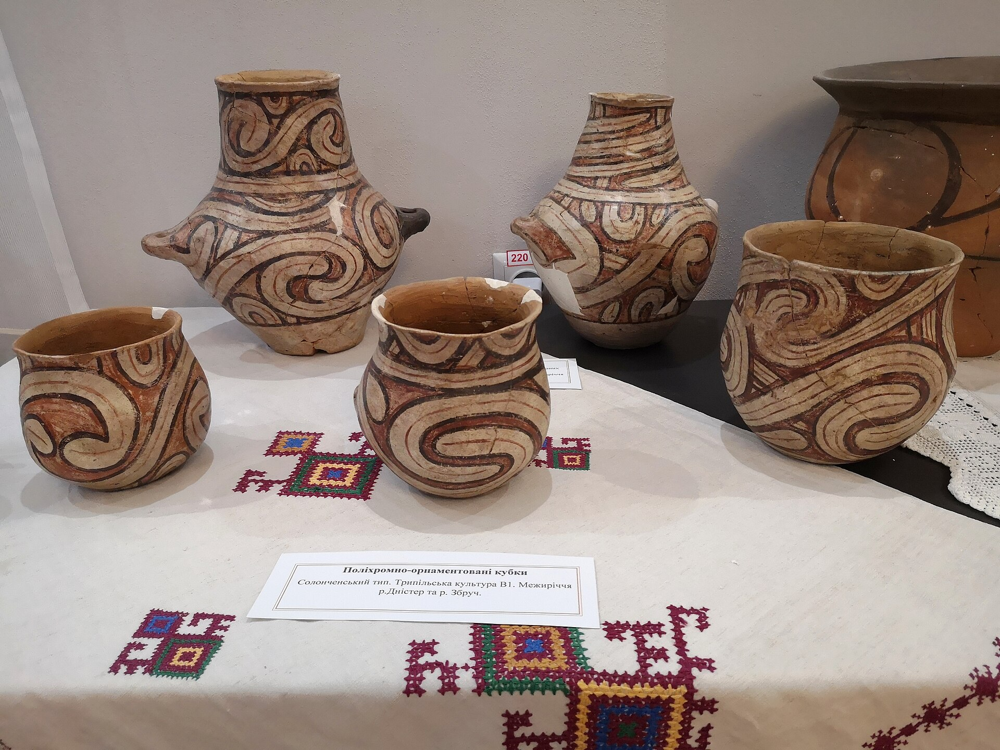
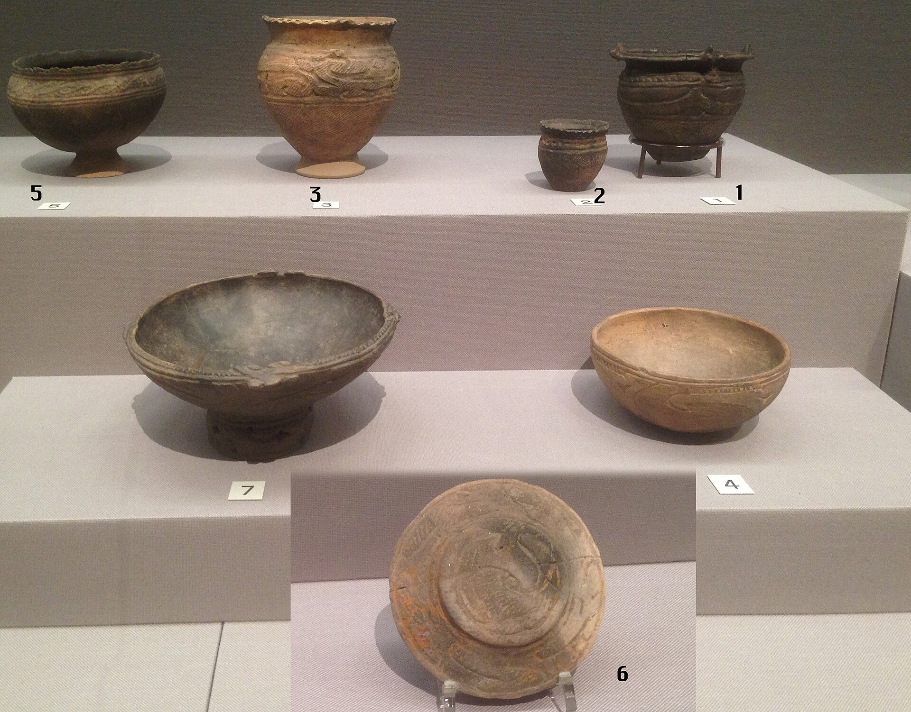
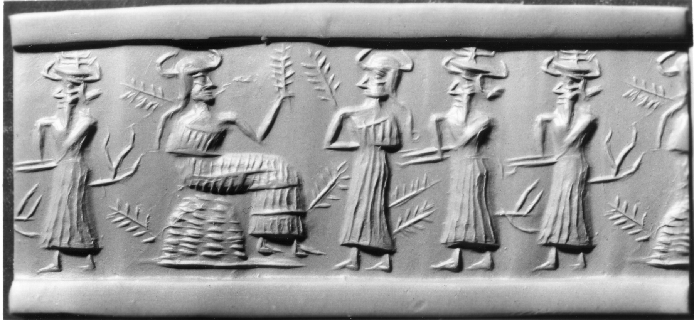

Рішення 1/10
Лекція 2 · інтерактивне оцінювання
Читайте орнамент
як дослідник
П’ять лабораторних місій поєднають археологію, цифрові технології, реконструкцію та математику симетрії. Ваше завдання — бачити форму точно й не приписувати їй того, чого джерело не доводить.
5STEM-місій
10оцінюваних рішень
15хвилин
Максимум — 10 балів. Після кожної місії ви отримаєте пояснення, а наприкінці — повний аналітичний звіт.



Місія 01 · SCIENCE
Спостереження чи припущення?
2бали
Рішення 2/10
Твердження «спіраль мала релігійне значення» — це…
Місія 02 · MATHEMATICS
Геометрія повторення
2бали
Експеримент: якщо після перетворення контур збігається із початковим, це перетворення є симетрією композиції.
Рішення 3/10
Яке перетворення зберігає композицію без зміни?
Рішення 4/10
Скільки разів базовий криволінійний елемент повторено навколо центра?
Місія 03 · ENGINEERING
Цифрова реставрація
2бали
?перетягніть фрагмент
Перетягніть фрагмент у порожнє місце або натисніть на нього. Використовуйте правило чергування модулів.
Рішення 5/10
Який фрагмент найкраще продовжує зафіксоване чергування?
Фрагмент ще не встановлено.
Рішення 6/10
Який статус має така цифрова реконструкція?
Місія 04 · TECHNOLOGY
Три технології сліду
2бали
Для кожного артефакту виберіть технологію, яка найкраще пояснює видимий слід.
UA–01
Кукутень–Трипілля
Криволінійні композиції на поверхні посудини.
JP–02
Дзьомон
Фактурні заглиблення й повтори на поверхні глини.
ME–03
Месопотамія
Безперервна сцена, перенесена на м’яку поверхню.
Рішення 7/10
Технологічне зіставлення
Заповніть усі три поля. Один бал нараховується лише за повне правильне зіставлення.
Рішення 8/10
Який висновок найкраще поєднує технологію та інституції?
Місія 05 · STEM SYNTHESIS
Суд інтерпретацій
2бали
Фінальне досьє
Подібність — це початок запитання, а не кінець доказу.
Визначте, які формулювання академічно коректні. Пам’ятайте про часові розриви, контекст знахідки та альтернативні пояснення.
спостереженняпорівнянняінтерпретаціягіпотеза
Рішення 9/10
Чи доводить подібна спіраль пряму спадкоємність між трипільською керамікою та сучасною українською вишивкою?
Рішення 10/10
Яке твердження про орнамент як культурну пам’ять є найточнішим?
0/10
Лабораторію завершено
Результат
Пояснення кожного бала
0 із 10Джерела зображень і ліцензії
- Кераміка Кукутень–Трипілля — Wikimedia Commons, фото Bazhana.ph; сторінка файлу та умови ліцензії доступні в Commons.
- Final Jōmon Pottery of Tohoku District — Ismoon, Tokyo National Museum, CC BY-SA 4.0 / GFDL.
- Mesopotamian Cylinder Seal, Walters 42.564, Impression — Walters Art Museum / Wikimedia Commons, CC BY-SA 3.0.
Схеми симетрії та реставрації є навчальними моделями, а не копіями конкретних артефактів.